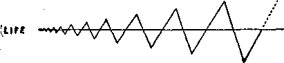

Sept 27,1922, Vol. Ill, Na 79
■SB Published every other lfj£l week at 18 Concord Street, Brooklyn, N. Y., U. S. A.
Five Ceuta a Copy—$1.00 a Year
Canada and Foreign Countries. $1.00
VOL. 8 WEDNESDAY, BKPTBMBEB. 27, 1022 Wo. D
CONTENTS of the GOLDEN AGE
LABOR AND ECONOMICS
An Imaginary Visit Downtown----------------------- . . 809
Not for Poor People -------------——.........
Conditions in Georgia --------
FINANCE—COMMERCE—TRANSPORTATION
Mr. Drummond's Transportation Plan ----------—.
POLITICAL—DOMESTIC AND FOREIGN
Beyond the Indus, Part I 803
Governmental Complica
Political Money-Blessers ..814
Business Men in Congress 814 \v i id Beasts ........................814
Interdependence of Nations .......... 822
AGRICULTURE AND HUSBANDRY Agriculture in India
SCIENCE AND INVENTION Vacuum Tube Amplifier
ROME AND HEALTH How to Keep Well ........816 Effect of Thought
Poise Is Perfection ..........819 Principles of Poise
RELIGION AND PHILOSOPHY
Mr. Bryan and the Clergy 822
How Long Would Christ
Last? ________________________________823
Did He Baptize the Dog? 823
Liberty and Love Forever 824
The Wise and. Otherwise 825
Catechhm for loung
His Satanic Majesty the Devil 826
Christianity and the Bible 828
Studies in the “Harp of
God"831
Published every other Wednesday at IB Concord Street, Brooklyn, N. Y, . . . . TI. S, A. by WOODWORTH, HEDGINGS and MARTIN CLAYTON .J. WOODWORTH.......Editor
ROBERT .1. MARTIN .... Business Manager WM. F. mwiNCS......Sec’y and Treas.
Copartners and proprietors, Address: 18 Concord S'trefi, Brooklyn, N Y., ... U. S. A. Five! Cents a Copy—$1.00 a Yeab foreign offices : British : 34 Craven Terrace, Lancaster (isle, London IV. 2 : Can a fHan •_ 270 Dundas St. W., Toronto, Ontario: AH^trala-vinn ; J-O5 CnUijis St.. Melbourne. Australia. Mako rpmittHTicps-to The Gnl'lrn Arje Entered m second-class matter at Brooklyn, N. 7. uder the Act of March 3, 1879.
Volume III Brooklyn, N. Y., Wednesday, Sept. 27, 1922 Number 7t
THE word India simply means “Beyond the Indus,” the river at the western boundary of" the country. India is a triangle, washed on two sides by the sea. Its length, north to south, is 2,000 miles; and its greatest width is 1,800 miles.
Two millenniums ago the armies of Alexander the Great, ruler of Greece, invaded India. But India is a long way from Greece, and the soldiers who had conquered the world for Alexander did not wish to go farther away from home. Alexander wanted to go on, but lifter a few days’ parley saw that he could not do it without a revolt, and reluctantly turned back. In the middle ages the Mohammedans overran the country, and there are 66,000,000 Mohammedans in India at this day.
The problem of giving India a just, humane, uplifting government is the greatest governmental problem ever undertaken by man. It is so much more difficult than Britain’s Irish problem; or Mexico’s peon problem, or the United States’ Negro or Philippine problem, that all of them, and a dozen more to boot, are not worthy of comparison. The reason is that India is not a unit in any direction. It is disunited racially, lingually, religiously, industrially, socially. It is in an abyss of poverty beyond the ability of any mind to comprehend .that has not come into actual contact with India itself. And the problem is not getting easier of solution. Indeed, it grows harder year by year; for India is going to ruin in more ways than any other country, and has a less distance to go.
Imagine a land in which the people cannot afford to have separate homes; but family groups of thirty to fifty individuals live in one house, built around a quadrangle. In these dwellings are women whose only view of life is that of the court upon which the rooms of women always face. There is no furniture. The sanitary arrangements are unspeakable. The buildings are so rickety that they can barely stand. The walls and the floors swarm with vermin. In millions of these homes, food is to be had but once a day. Cholera and plague are rife. Tn the cities the industrial workers sleep fifteen to twenty in a single room, in a stifling atmosphere and in an intolerable stench. A single window or door provides what ventilation there is.
In the country as a whole the rainfall is the heaviest in the world; yet, at times, there are hundreds of square miles of scorching plains without a tree, and so dry that the earth cracks. Leprosy and fever stalk hand-in-hand with hunger within the villages, while cobras and other poisonous serpents lie in wait to catch the unwary, or even invade the villages themselves. Four million people die of fever in India annually. One woman out of every six is a widow, and considered of ill-omen. She is denied suitable clothing, her jewelry is broken, her head is shaved, and she is virtually a prisoner for life. Even if not a widow, she may not take a railway journey except in a closed compartment with drawm blinds. If a woman of rank, she drives to the station in a closed carriage and passes from the carriage to the train through an artificial passageway of sheets held up by servants. She has nothing to say about whom she should marry. The marriage contract is arranged through brokers. To be the parent of a large family of girls is a disgrace; for a daughter is considered a calamity.
IMAGINE the difficulties of trying to rule over a state that for centuries was administered by 700 separate and distinct governments, all bearing rule at the same time in aa many adjoining states, and each with different customs handed down for generations. In these states forty languages and nearly four times that number of dialects are in use. Seventy of
the native states, inhabited by an average of a million people each, are governed by their native rulers much as they have been for hun-. dreds and in some instances thousands of years. The problems of governing such a people as a whole must involve the wise direction of these lesser rulers.
Imagine the difficulties of trying to rule over 315,000,000 people, only six percent of whom can read and write, and of whom twenty percent are Pariahs who may not even use the public roads because they pollute others at sixty-four feet; and these 315,000,000 people are divided into 2,300 major and many more minor castes, with such an infinite variety of rules respecting pollutions and purifications that foreigners never get to understand them fully.
A family of one caste may not mingle with those of another. A Pariah is considered untouchable and may never rise above that state. The average wage is three cents a day for all classes. Any kind of dead animal is the basis for a family feast among those who are of the untouchables. Clothes are washed by pounding them on a rock.
Here is a land which has more than 30,000,-000 gods, or demons, each' requiring acts of penance or self-inflicted torture on the part of the worshiper. Each devotee is supposed to wear on his forehead the mark of his god, which determines his caste and his standing in the caste. The devil is worshiped because he is the strongest of gods; smallpox is deified.
Women are never mentioned in conversations between men. It is an insult to speak to a man about his wife. The forty million child-widows are never permitted to view even the tops of the trees. Their whole lives are spent indoors. It is a life dishonor to reach the age of twelve years without being married. Public prostitutes are attached to the temples of worship, for the convenience of the heathen clergy and their friends.
In one section a marriage ceremony requires three days; in another a whiff from a pipe suffices. In one section the women wear skirts and in another trousers. There are districts where hunting and even warfare are still carried on with bows and arrows; and if there are not enough complications in governing the Hindus there are 66,000,000 fighting Mohammedans, with all the idiosyncrasies for which Mohammedans are famous.
Speaking in general terms, there is only one European in India to each 2,000 population. It is perfectly obvious that the only legitimate excuse a European has for being there is an unselfish desire to help the natives arrange for themselves that form of government which will be for their greatest benefit. Besides these Europeans (only 168,000 in the whole land) there are 16,000,000 natives who have some education and who under the direction of Europeans are engaged in professional and administrative work. These millions are more easily directed than the overwhelming masses engaged in agriculture, all of whom are chronically on the verge of starvation.
It is obvious that one of the things most needed in India is education; and it seems a great pity that in a land where the taxes can be wrung from the people only at the cost of the deaths of large numbers of them that so much money should be spent for other things and so little for the education that would help to relieve the whole horrible situation.
In the United States it is said that out of every dollar raised for taxation something like ninety-three cents goes to pay the cost of wars that are past or wars that we hope to get into in the future. But we do spend one cent of the dollar for education; and to that extent, or, we may say, in that proportion, this is a civilized nation. Indeed, some have even termed this a Christian nation, largely, we presume, because of the sums we spend for such good purposes. India does not do quite so well in the education of the masses; it has too many other ways for its money. It collects a total revenue of $617,000,000 and pays out $1,838,338 for education — less than one-third cent per one dollar. Ninety percent of the girls and eighty percent of the boys receive no education at all.
The income of the average American has been computed at exactly forty times the income of the average Hindu, but the Viceroy of India is not content with one fortieth of the income of the President of the United States. Not on your life! The President gets $75,000 per year, and the Viceroy gets $83,500, plua
many allowances and presents from native rulers—which make the job much sought after. Christian Viceroys in heathen India have to be well paid.
Then the Viceroy must have assistants, somewhat like the President’s cabinet. Each member of the President’s cabinet receives a salary of $12,000 per year, but a member of the Viceroy’s council receives considerably more than twice that amount each. When these arguments reach the ears of the Hindu heathen, they become very convincing evidence that Christianity is a paying proposition, that pays even better in heathendom than it does in Christendom.
The press of India seems to be in about the same condition as the press of the United States, i. e., afraid to tell the truth on any subject for fear of getting into trouble. In the year 1910 the Viceroy and his council (these make all the laws for India) put through a Press Act, calculated to take away all remaining freedom of the press in India; and the law seems to have accomplished, just what was expected of it by the liberty-loving British Empire. Since its enactment penalties have been levied on some 350 presses, 500 publications have been suppressed, and 300 newspapers have been bonded in large amounts. The press may publish the most violent attacks upon the natives, but nothing seriously criticizing the European interlopers.
On account of its poverty India cannot afford much in the way of instruction by movies, although there are said to be 168 motion-picture houses, at which all classes of films are shown. The poor Hindus are like everybody else—seeking something of change, something that will make them forget their unhappy lot. They revel in the American films displaying the daredevil feats of cowboys on the American plains.
OF COURSE everybody knows or should know that there is no agricultural land that does not produce enough food to care for its population if there were some way by which all of the food raised could be devoted to feeding all that need it. But no such way has been found. When the great famine of 1921-1922 visited China, and millions died for want of food, Chinese big business was exporting eggs and other foodstuffs in great quan-
tities. Does it not seem a pity that there waa not some power in China strong enough and -good enough to buy those eggs or commandeer , them and distribute them among the starving? Now if the Chinese government had had a V starving army instead of just plain common ordinary everyday folk, not an egg would have moved until the army was cared for. -7
So it is in India. The country raises food enough. One cannot judge otherwise from the : facts; for in the year 1899-1900, when India ' was in the throes of one of its greatest famines, it exported over $60,000,000 worth of <grain, and during the famine year of 1917-1918 the exports of foodstuffs were 7,000,000 tons, amounting in value to $247,179,360.
Students of Indian affairs claim that in the last great famine, in one year, the deaths from starvation and from plague caused by insuffi- , cient food amounted to 40,000,000 people; and they lay this loss directly to the World War, ' which swept India of foodstuffs. Does it not seem a pity that India does not have a government strong enough and good enough to prevent the export of foods when it knows that such shipments mean the death of millions f Granting that the civilization of Europe is • beautiful, brotherly, generous and “Christian,” is it sufficiently so to justify the killing of 40,- ;
000,000 Hindus by starvation in order that it may flourish in those arts of war and bloodshed to which it is chiefly devoted and to which it has given and still gives practically all of its ; income I .
The London Times can hardly be classed as a sentimental journal, but it published the following from its Bombay correspondent; and there is a world of pathos in the simple recital of the facts attendant upon one of the greatest dramas of misery ever staged on this planet. The dispatch said:
“India having been swept bare of foodstuffs to meet the exigencies of the war, the people feel that the home government is lukewarm in releasing supplies from outside, and regret particularly that the shipping controller is maintaining high freights on fat and rice from Burma. These severe sufferings are superimposed on the devastating influenza and cholera epidemics.”
Taxes in India
Ti IE money paid in for taxes in India would 4 do a great deal to alleviate the miseries of its people; for $617,000,000 is a great ,sum of '|g| money. In India, it would prevent 40,000^000 people from starving, and leave over a third of the sum for distribution expenses, education, etc. Of course the government would have to cut down its expenditure of $213,911,500 for military purposes and $72,344,500 for strategic railroads; but would it not be worth while when people are starving? Starving people cannot eat armed soldiers or railroad tracks. It might be necessary to give the Viceroy a cut in his wages of $83,500 per year, with a slice off from the councilors’ wages of $27,000 each per year. The jobs would be good ones at very much less wages, and the best of Viceroys or councilors is not worth much to a man that is starving to death.
Much of the money collected for taxes in India really belongs to the people themselves. Thus, the $113,432,000 land-tax, the $17,764,000 from forests and the $19,571,500 from salt are all for the use of things which pertain to the Hindus as a people from time immemorial. What a pity that only $1,838,338 of all these
amounts finds it way back to the people in the form of expenditures for education!
Some of the money assessed for taxes plainly
’ belongs to the devil. In no other category can we place the $15,281,000 derived from the British Government opium monopoly, and the $60,766,550 derived from the sale of liquor. America is much more pious. We do not license the sale of liquor here; that is, we do not do so any more. We would be doing it—most certainly we would—but the ones that would have voted for the continued reign of John Barleycorn in our midst were busy drinking French wines when the Prohibition Amendment to the Constitution was passed, and the Supreme Court, in the exercise of rights not granted to it by the Constitution, has not yet decided that the Constitution is unconstitutional, though there are some who surmise that it may do so some. day.
Sir William Digby has published statistics showing that the transport of India’s foods from the interior to the coast by means of the numerous railway lines and thence to the ends of the earth has so worked against the interest of the people that famines are increasing in frequency and intensity. He shows that in past centuries there was the number of famines indicated :
CENTURY EAMINM
Eighteenth (prior to to British Rule) .....r
Eighteenth (subsequent to British rule)
Nineteenth (second and third quarters)
Nineteenth (fourth quarter) ....................18
Tables of data which are of information as showing that India’s famines are not due to overpopulation are provided in the following statistics:
POPULATION
COUNTRY - PER SQ. MILS
England and Wales ..................618
Italy ............................*.293
COUNTRY
BIRTH RATI per 1000 POPULATION
Famines in India are not caused chiefly by failure of rains; for India has the heaviest rainfall in the world. The real cause of the famines is the same as in China—the need oil a government strong enough and good enough to tree India’s food supplies for India’s people.
Historians claim that it was from the taxes raised in India that the full costs were paid of Britain’s first Afghan war of 1839-1840; the Persian war of 1856; the Abyssinian war of 1866-1868; the Perak expedition of 1875; the second Afghan war of 1878-1880; the Egyptian war of 1878-1880; and the Soudan war of 18851886. It is hard to see why people who are starving to death, or who are always on the edge of starvation, should have to pay these bills.
Professor Radhakamal Mukerjee has published a table showing the percentages which
various classes of Hindus for food and other items:
spend respectively
4)
Food .........
Clothing ......
Medicine ......
Education .....
Luxuries ......
Religion and
Social Ceremonies
Ori
95.4
4.0
0.0
0.0
0.0
0.6
94.0
3.0
1.0
0.0
0.0
2.0
,8 <■ a u S.
83.5
12.0
1.5
0.0
1.0
2.0
79.0
11.0
5.0
0.0
1.0
4.0
it
5s
COM
77.7
9.0
5.9
1.0
1.4
5.0
d>
74.0
4.7
8.0
3.3
2.0
8.0
100.0
100.0
100.0
100.0
100.0
100.0
India are devoted to opium culture. The “Christian” government of India is directly back of this monopoly, and stands sponsor for the 18,- t 000 licensed opium dens that are destroying the people of India, because it clears some $15,000,000 annually from the traffic.
Slavery in India
COOLIES in the tea gardens of India seem -to be treated about on a par . with the treatment of American citizens in the convict camps • of the South, as far as we can judge. That is> . they are treated as slaves, and all just rights as human beings are denied them.
A case has come to our attention where some
Commenting on this table a writer has well said:
“Work, hunger, lingering death—these are the milestones on the tragic path of the life of the workingman in India. Enveloped in an engrossing mist of poverty he goes through life as in a nightmare. From birth to death he rises before dawn hungry, works all day long with but little to eat, and at night he goes to bed hungry again. His constant companions are hunger and thirst, debt and degradation, sorrow, suffering and sickness, unclean clothes and unsanitary homes. His only Consolation in life is the hope of relief in death.”
One of the causes of India’s poverty is that out of a total population of 318,132,537, according to the latest census returns available, 4,500,000 are what are termed in India mendicants or holy men, but what in America we would probably designate as religious bums or pious tramps. These go on pilgrimages from one “shrine” to another, begging their way from the poor people along the route.
Agriculture in India .
INDIA produces one-tenth of the world’s wheat, one-fifth of its cotton, and one-third of its tea, tobacco, rice, cattle, and cane sugar. The crop-yielding area is 198,500,000 acres, 54,000,000 of which are in rice and 14,000,000 in cotton. The irrigated area is 37,000,000 acres, but much more irrigation is necessary to properly distribute the water supplies. Some of the irrigation projects of India pay their promoters the full cost in dividends every four years. It seems a pity, after they have paid for themselves a few times, not to do the generous thing and let the poor Hindus have them as a gift.
More than 200,000 acres of the best land in five thousand coolies during the war had their costs of living doubled and their wages raised only ten percent. They desired to return to the mainland from the port on the Brahmapootra River where they were employed. Access to the boat was refused them and there was some disorder, but no one seriously injured. That night the camp of these refugees was entered by armed men who assaulted men, women, and children with the butt ends of their rifles. This unexpected attack, following upon the weakened conditions of the people due to insufficient food, is supposed to have been responsible for the cholera epidemic which followed.
It has been often observed that cholera, the bubonic plague, or the “flu,” frequently follows special drains upon the vitality of the halfstarved Hindus, and that those reasonably well fed are immune. It was the shortage of food in India during the winter of 1917-1918 that caused the 6,000,000 deaths from “flu.” For a while they were dying in Bombay at the rate of 5,000 per week. About one-third of the “flu” ■ deaths of the world took place in India.
Those that have knowledge’ of the matter claim that there are at least 100,000,000 of India’s population who are chronically underfed,’ and that 60,000,000 of these must be content v with one meal per day.
The high cost of living, due to the World War, has caused much unrest among the Mo-hammcdans. One of the rules of the Mohammedan clergy is that the dead shall be buried in unused shrouds, as otherwise they will not . land hereafter in the special place which is to j be occupied by those who have observed the ' rules. The lower-class Mohammedans are compelled to bury their dead in used garments-— /da
i-
in dread of what it means to the departed and to themselves for the sacrilege committed. Poor things! What a blessing it would be to them if they could but know the truth that these poor heathen have merely gone to sleep; and are now quietly and unconsciously awaiting the blessings which are to be brought to them and to all through Messiah’s kingdom, now at the doors.
INDIA has been styled and is generally admitted to be “the prize of empire”; i. e., it has the greatest natural possibilities of any country on earth. It lies in a commanding position on the trade routes of the world and is one of the greatest, if not the greatest, reservoir of raw materials on the planet. It has a sixth of the world’s population.
India could have the greatest metallurgical works in the world; for it has vast coal fields and billions of tons of iron ore, lying on the surface, which can be loaded on cars at less than a dollar a ton. It is one of the greatest producers of manganese, and has inexhaustible riches of gold, silver, copper, tin, antimony, lead, platinum, bismuth, tungsten, graphite, mica, asbestos, gypsum, chromite, clay, alum, petroleum, agate, sapphires, diamonds, and rubies. It has ivory in large quantities, and untouched sources of vast power in the great rivers which rise in the Himalayas and find their way into the Indian Ocean.
Two thousand years before the beginning of the Christian era the beautiful muslins of India’s hand-looms were used in Egypt as winding sheets for the mummies of the Pharaohs. Before the traders of Northern Europe ever found their way around the Cape of Good Hope, India's silks, brocades, carpets, woodwork, ivories, silverware and brassware were sought after and admired throughout the breadth of Asia, Northern Africa and Eastern and Southeastern Europe. Today India has nothing left but agriculture and a few cotton and jute factories.
For a time after British occupation India sent the products of her looms to England, where they commanded fancy prices; but the invention and use of labor-saving machinery soon changed this. In a little while England was importing India’s cotton and sending back cotton piece-goods -to India cheaper than the Hindus could make them. The natural result was that the Hindus bought the cheaper goods, and their own weaving industry collapsed.
Without specific information as to how it was . done, the Hindus claim that they have been discriminated against by legislation which has deprived them of their industries, and that at the same time they have been given inadequate aid in obtaining the education 'without which they can never regain their former position among the industrial peoples of the world.
They claim that at the present time the markets of India are swamped with articles of European manufacture, which are beyond the powers of the Hindu people to purchase, and ■which, without machinery, they cannot make for themselves. They say, too, that if they could revive their ancient industries on the basis of modern science, and could for a time retain in their land the grains which they have raised, they could do away with want and misery and make India a second Garden of Eden — indeed, make it a place where, ultimately, many times more of European products could be absorbed than is now possible. Paupers are poor customers.
That British statesmen see the possibilities of India is plain from the following remarkable declaration by Lord Curzon:
“India is so important that without her the Empire could not continue to exist. But for India Lord Beaconsfield would not have bought the shares in the Suez Canal; and but for the Suez Canal we should not be in Egypt. But for India we should not have been able to incarcerate the mighty spirit of Napoleon in the rocky prison of St. Helena, nor should we have acquired predominant position in Mesopotamia, nor have controlled the Persian Gulf. India started us on that career of territorial conquest which was arrested only by the snowy ramparts of the Himalayas, and which converted us from a small island with trading and maritime interests into the greatest land power in the world. Consider what would happen were we to lose India and were some other power to take our place. We should lose its splendid and unfailing markets, shut against us by hostile tariffs; we should lose what is the principal, indeed, almost the only formidable element in our fighting strength. Our influence in Asia would quickly disappear; we should not long retain the posts and coaling stations which dot the ocean highways with the British flag; Australia would be much more open to attack; our colonies would cut themselves off from a dying trunk, and we should sink into a third-rate power, an object of shame to ourselves and of derision to the rest of mankind.”
WE WILL suppose that by some extraordinary'chance a kind motherly woman pays a visit to the mother of three small children, and informs her that she will care for the children while the mother takes an afternoon off, away from all her household cares and worries.
The afternoon is bright and sunny; so the young mother decides to take in the sights of the many department-store windows.
She has not walked a great distance before she notices a number of people gathered in front of one of the windows of an electric store. After investigation she finds out that the demonstrator inside the store window is about to display the very latest model in electric washing-machines. She decides to wait and see the demonstration. She views with a measure of incredulity the ease and comfort with which a large family washing can be completed independent of human energy. She walks away, thinking of the one-day-a-week task which keeps her bending over her washboard. She cannot even indulge in the luxury of the thought that some day she may be able to afford such a machine.
After walking a short distance, she reads an announcement in one of the department-store windows to the effect,/Be sure to see the ideal kitchen in the basement.' She resolves to see the exhibition..
On arriving* there, she finds the ideal kitchen scientifically arranged, and completely furnished with all the latest electrical appliances which save the housewife time and energy. She is enraptured at the electric stove, with its many labor-saving devices, and its high oven ‘which eliminates so much stooping. But alas, she knows that she must be content with the stove she has at home.
Her attention is next drawn to the electric dish-washer. As she marvels at the simplicity and rapidity of dish-washing accomplished by this labor-saving device, she thinks of the pile of dishes she washes each day and of the valuable time that is spent on this one task alone. Surely the electric dish-washer would be a blessing in her home. But she realizes that her circumstances permit only the bare necessities of life.
Laid out on the table is a complete canning outfit of numerous little devices which help to make canning a pleasure for the housewife. She meditates. What is more gratifying to the average housewife than, when early fail seta in, to go down into her cellar and view with satisfaction the tempting array of jars of preserves, luscious jams, and vegetables ready for the winter's use! But too often these same jars represent hours of strenuous labor, due to the fact that the housewife did not have the necessary utensils to work with. Truly she thinks this canning outfit wonderful for those who can afford it.
After taking in the many details of the ideal kitchen, she passes on to another department, where she has the pleasure of seeing the electric vacuum-sweeper demonstrated, and with consternation views with what simplicity the dirty, trodden rug can be revived to look like new. She thinks what a boon this electric vacuum-sweeper would be in her home compared with her daily tiresome task of sweeping with a corn-broom. But again she realizes that these luxuries are not for her. • -
IS
NOT FOR POOR PEOPLE
A few circles away she watches with close attention the electric sewing-machine exhibited with its many beneficial advantages and truly considers it a great saver of time and human energy. She thinks of the many hours she spends treadling her old-fashioned sewing-machine after she has done a good day’s work and put her little ones to bed. But again she passes on with no hope of having a new machine of her own.
On her way out her attention is drawn to the flower section. The inborn love of the beauties of nature is strong within her, although she rarely has the pleasure of feasting her eyes upon them. She thinks: <rWhat a treat it would be to be able to take home half a dozen roses.” But she realizes that the amount of money necessary for such a treat would buy a pair of much-needed stockings for her boy.
With varied feelings she walks home, pre- . pares the evening meal, and at the supper-table relates to her family the experiences of the day. After getting her little children tucked into bed, she draws her chair up to the fire, closes her eyes, and indulges in a mental vi-. sion of the home of the more fortunate house-' wife who is in the position to hire sufficient help and to assign each servant to special duties, so as to keep her home methodically managed and cleanly, and who, through having the necessary capital at her command, is enabled to install all these beneficial appliances, and thereby decrease her staff and her household expenses considerably. This housewife realizes that in the electrical appliance she has an ever-willing and obedient servant that knows no set hours and rarely has a grievance.
The young mother ponders: Why be so? Why are these beneficent only within the reach of women who
should it blessings too often
have the least need of them—women who are quite able to pay the price for human energy to accomplish whatever task they want done? Why should the young mother who is burdened with the care of a small family, and who has to manage her home independently of help, be denied the opportunity of benefiting through all these blessings that have come to mankind within recent years? Surely if any one was meant to benefit by these appliances, it was the mother of small children who has numerous calls on her energy during the child-bearing and child-rearing period of her life.
In ages past poets and composers have written and sung the praises of mother, her unselfish love, her ever-ready and keen sense of sympathy for those in trouble and sorrow. But somehow it seemed that before they_coul<l bring a vivid picture of “Mother” to the eye, they had to depict her in the following phraseology: “Her brow that’s all wrinkled and furrowed with care,” or “The silver hairs that shine among the gold,” etc. Alas I Today we find that mankind in general has done little to help to keep these wrinkles and silver hairs away. In fact, we generally find that mother has to grow into these characteristics before she is fully appreciated.
Let us all hope that ere long mother will have all her cares and sorrows taken away, that she will soon share in the blessings that will be showered on mankind when Jesus takes unto Himself His great power and reigns in equity, when men “shall build houses, and inhabit them; and they shall plant vineyards, and eat the fruit of them. They shall not build and another inhabit; they shall not plant and another eat; for as the days of a tree are the days of my people, and mine elect shall long enjoy the work of their hands.”(Isaiah 65:21, 22) Then, God’s blessings will not be limited to the favored few — to those who by birth, environment or chance, have all earth’s good« things poured into their laps.
-4
CONDITIONS in this part of the country are deplorable, and admitted to be so even by- the city newspapers. Russell County is in bankruptcy; many others in this vicinity are on the verge of bankruptcy, according to reports. In our little city there has been a good number of business houses that have gone into bankruptcy this year, and business is practically dead in this part of the country. The Eagle and Phenix cotton mills here, which employ about 2,000, are running four days per week at wages as low as before the war. The Perkins Hosiery mill, which employs about •1,000 when running, is shut down. There are twelve or fifteen cotton mills here and all of them have reduced wages back to the pre-war scale, and at the same time house rent is as high as it was during the war and in many cases higher. The men who own and rent houses are members of the different big churches in this city, or at least the majority of them are.
Concerning morality, I believe this city is worse off than any place of its size in the state of’Georgia. We have Camp Benning just eight miles below the city and our streets are throng- ’ ed with soldiers and officers. Morals are at a low ebb. The crime wave here is terrible. Recently the city court record showed 107 cases in one week. It will average ninety cases per week the year around. In the face of all this crime the churches that were recently preaching war have been running protracted meetings ; and all the time crime increases.
I am convinced we are living in the end of the gospel age and in the dawn of the Golden Age, when the true bride class shall soon become united to the Groom or Lord and Head, and see Him as He is, and share' His love through all eternity; in blessing and lifting up 19 tile poor world of mankind to the original condition of father Adam before he transgressed the divine law.
Thank God for His vengeance on all institutions of error, and unrighteousness worldwide. The signs that our dear Lord said would come at the end of the age have come just as He predicted, and all that He said would happen is just as sure to come to pass. The nations are assembled and are taking counsel together against the Lord; but all the navies, all the armies, all the dollars, all the men, and all the women taking counsel against the Lord shall utterly fail; for God will have them in derision.
on any trunk, store, bank, or dwelling-plae^ nor on anything we have if only the truth were understood by the poor groaning creation. It would put a lot of men out of work-—the kind they are now doing—but they could, under the right kind of government, be placed in more useful occupations of production for the necessities of life, instead of being a burden on the people as they are now. It would not be long before the world would have an abundance of supplies of all kinds, and people would thus have fewer hours to work; their leisure time they could devote to the study of the divine plan of the ages.
-J. How the poor world needs the truth I but . they shall have it in due time. How sweet the ' real truth is; it will clean up any man or wo-• man if only he or she will read it and give heed to it. We would not need a jail, or police force, ’ or armies, or navies, nor even a lock and key
They will have to swallow the seven volumes of “Scripture Studies,” whether they like to or not. These studies are the medicine that they need, and the seven doses taken according to directions will cure any case—it matters not how sick the patient may be.
Mb. B. J. Drummond writes with such evident sincerity in his article, “Solving the Railroad Problem by the Golden Rule,” that I accept his offer to answer questions to obtain further information. I would be pleased to see my questions answered categorically in The Golden Age. [Mr. Robinson’s questions and Mr. Drummond’s replies thereto follow in order.—Ed.]
Page 240, Column 1, paragraph 3, he says: “Both parties are not guiltless; . . . transportation systems can be made to serve more adequately the public whose creatures they are.”
Question: If both parties who now operate the roads are guilty of hampering transportation, why should not the public take possession of its creatures (the roads) and operate them in the interest of the public?
Answer: The “Public” had control of the carriers for a period of twenty-six months with the result that the writer, along with thousands of others who used the service provided, were more than ready to welcome the return of the roads to private operation. The fastening upon
. the carriers of the “National Agreements” covering working conditions is only a fair sample of what might be expected were political influence dominant. The casual shipper cannot possibly appreciate what the daily user of transportation was obliged to contend with.
Page 240, Column 1, Subhead, “Unselfishness Requisite.”
^Question: How will the proposed plan promote the required unselfishness?
Answer: Unselfishness would naturally follow any plan wherein the success of any one group is dependent upon the cooperation of the other two. It must be botne in mind that the net amount subject to distribution pro-rata is that which remains after deducting from gross revenue the total expenses exclusive of compensation. There is a natural desire on the part of money, brains and brawn to increase gross revenue and decrease expense in order that a larger amount may be available for distribution.
Page 240, Column 2, paragraph 2: “Brawn cannot be side-tracked in the matter of compensation. It is entitled to receive fair consideration at the hands of money and brains.”
Question: Does this imply that money and brains will work as colleagues in fixing the compensation of brawn?
Answer: They do not fix the compensation of brawn, nor does a combination of any two elements fix compensation of the third. The compensation is fixed by economic conditions as indicated in the answer to query 2. The United States Department of Labor is suggested as a possible medium for fixing the value of the various classes of brains and brawn from which to determine the amount of stock to be issued to each individual comprising the several-groups. To illustrate: Male stenographers for instance are capable of earning $1500 a year whether they serve a railroad, a jobber, a manufacturer, or a lawyer. This is equivalent to a return of five and one-half percent on approximately $28,000; hence each male stenographer would receive 280 shares of-stock at par value of $100 each as representing his contribution to the business.
Page 241, column 2, paragraph 2.
Question: How much water is included in the $18,900,000,000 money capital proposed?
Answer: This sum representing money capital invested in the American Bailroad is a tentative figure given out by the Interstate Commerce Commission as the value on which rates are to be made so as to produce, as near as may be, five and one-half percent on such value. The Commission states this value does not include any water; same having been squeezed out in the process of valuation on which the Commission’s Engineers have been at work for more than five years last past.
Question: Does the brawn capitalization recognize the brain required in the manual operation of the roads? .
Answer: It does to the extent that they are necessary to carry out and execute the orders of management. A crossing flagman who did not possess sufficient brains to wave the warning signal at the approach of a train certainly could not be intrusted with that responsibility; and yet it is not his brains that are being compensated, but his ability to give the signal. His compensation is measured by his “stock value.” One with only sufficient ability to flag a crossing for a railroad is in the same class as one who acts as a “chambermaid” in a livery stable. Such ability would probably command compensation of about $700 a year, equal to five and one-half percent on about $13,000; therefore such an one would be assigned 130 shares of stock.
Question: If so, what portion is for brain ' ' and what portion for brawn?
Ansiver: See foregoing. .;
Question: If part of the brawn capital is ’ for brain, is it capitalized on a par value with managerial brain? <
Answer: See foregoing.
Page 211, column 2, paragraph 3. This paragraph provides for the redemption of surplus 4 money capital at a premium of two percent । plus accrued dividends. It also provides for dis- j missal of surplus brain and brawn and cancel- I lation of their capital on payment of two dol- M
lars per share (a discount of ninety-eight per- | cent) and nothing said about accrued divi- | dends. This is proposed for times of depression to save transportation the burden of over- i capitalization. ‘
two dollars per share in their pockets in a time
Answer : It is conceded that whenever mon- ; ey, brains, or brawn, are found unnecessary and dispensed with, then they each receive two -dollars per share plus accrued dividends. If, . ,.l
in time of depression, brains and brawn are
dispensed with and thrown out of employment
with, say $260, as in the case of the crossing
watchman cited in answer to query above,
which is two dollars per share on 130 shares,
he would have that much to go on while the
investor whose $13,000 was returned would
likewise receive $260 to carry him over until
he could re-invest his money. During times of
depression he would probably have to accept less than five and one-half percent or might hot be able to get more than savings bank rates.
it will be of little value and at a time of de-
pression?
Answer: Brain and brawn are not at any ? greater disadvantage than money. During depressed times it is often more easy to sell one’s ~ talent or labor than to safely invest money at " compensatory rates. .
Page 242, paragraph 1 and 2.
Question: Does not the capitalization of brain and brawn cheapen men to a dollar val- 2 uet To illustrate: I once employed a Negro '
Massa; but befoh de wah I fetched $1500 on volved?
whom I jokingly asked: 'What are you worth, Uncle Mack?” His reply was: “Don’t know now, de block.”
Answer: If it is conceded that capitalizing one’s ability or brawn on the basis of what they are capable of earning in the world’s market is reducing men to a dollar value, then they are reduced to the dollar value. We are all worth what we are capable of earning. One would not think of compensating a mechanic fifty dollars a day for doing the labor of repairing a “Tin Lizzie”; yet many executives are capable of commanding much more than that. Why? For the same reason-that a skilled carpenter is worth more than the saw-and-ham-mer kind.
' Question: Does this plan fix a price of so
much* per head on the white railroad worker? Answer: See answer above.
Page 243, column 1, paragraph 1.
Question: In a 3, 3, 3 directorate is it not likely that brains and money capital will act in collusion as at present to hold brawn in subjection?
Answer: No more than brains and brawn might endeavor to corral money; each is compensated according to the value of his investment, no more, no less. Their interests are common.
Question: Will not the unequal compensation be a continual cause of strife in the directorate?
Answer: The compensation is not unequal; each receives five and one-half percent on the amount invested whether it be money, brains, or brawn, and neither can increase that rate without the others sharing at the same rate; likewise if the net revenue shrinks belqw that figure each class shares at the same rate.
Question: Would not the spirit of democ-
818 '*
racy be better served by a percentage of representation based upon the human element in-
Answer: No; for the compensation is not determined by the numbers involved. The money may be owned by few or many. The brains capital may be confined to a few, yet in value exceed the capitalization of either money or brawn. Likewise on account of highly skilled brawn workers a few might represent an in-vestment in excess of either money or brains.
Page 243, column 2, paragraph 3.
Question: Is it an equitable distribution of net earnings to allow the same compensation to money capital which performs no service, as to brain and brawn’s capitalized expert knowledge to which they add service in time and labor?
Answer: Money is as necessary to the successful operation of the business as is expert knowledge or skilled brawn. Many a brainy investor has gone to a pauper’s grave for lack of money capital. Money therefore performs a very necessary service. Brain and brawn workers have the opportunity of investing their surplus money in the business and thus draw dividends both as brain or brawn “investors” and money “investors” too.
Question: How would Jesus of Nazareth distribute the net earnings among those who had contributed to the transportation service?
Answer: I am not prepared to intelligently answer this question, except to state that I believe that Jesus of Nazareth would have made a distribution based on equity. I am sure that He would have adopted a method that would render an equal return to money, brains, and brawn, but the three working in harmony would have to earn it. If there were a loss, the three classes would also have to share it equally.
Pro and Con By l. d. names
Mr. Wilson still leads the Democrat party,” says a headline. The tendency is away from the Harding camp. Democrats and progressive Republicans are in favor. Yet we could not think of Mr. Wilson as leader. His espionage act, his private wars, his deportation and conscription acts, his daylight saving scheme, his league, his trip to Europe, his secret confab with the pope, his presents, etc., etc., preclude the idea.
Yet the people are forgetful. They are easily diverted and divided. They are conservative and trustful. Many are unread and unthoughtful. Thousands do not know that Democrat means Republican, and vice versa. They do not know that the real work of the old parties is to serve private interests and keep the people divided on tariff issues that no statesman can fathom. Mr. Wilson may be the leader, but evidently he is still headed for the Wilhelm-Czar Nicholas camp.
CEASE ye from man whose life is in his nostrils” says the Prophet. Political parties are a stupendous failure. Renegade republics have no more lease of existence than have the musty monarchies. Who could really believe in the Democratic party, so often in power, and as often derelict and unsatisfactory? Who could actually believe in the Republican party, which had all the say from the sixties to the eighties? These two parties representing the same idea of government, but nursing political ambitions, oppositions and hatreds instead of working for the greatest good, may expect rejection at the hands of the voters. The Democratic party is gone, let us hope, never to return. And its twin brother in corruption bids fair to go with it. “Be patient, therefore, brethren.”
Political Money-Blessers
RE CENT LY a “fortune teller” passed through and displayed great powers for blessing money. He could bless a roll so that it would prosper in the thing wherein it was invested and accomplish all that could be desired. One man got his two hundred blessed, and a woman had her fifteen hundred so conjured that like the widow’s oil it would never play out. The blesser merely passed the money over his head and behind his back and through his hair to impart the philosopher’s touch and the buying power. Thereafter, success would attend all investments, and everything that the money touched would turn to wealth. Then the roll, handed back, was not to be opened until a certain day at a certain hour.
But to spoil it all and to take the joy out of life one of the blessed got over-anxious and opened her package in the wrong place, and found only a roll of blank paper. But the blesser had passed on in his search for still others to bless and enrich.
Politicians and office-seekers work on the same principle. Promises are made from year to year, and the years merge into the dim past, and promises pile up like national debts. The people forget until the next April fool spellbinder comes along with his mouth disease,
and his magic of words to bind their faculties until the next election. Then they begin, to reflect that they have been stung once more. But again they forget until the next fool-stinger comes along. .
rpi IE capitalistic press suggests that “men like -L the Hills and the Schwabs and the Garys” should be sent to Congress. The Fricks and the Rockefellers should be included. With such men in Congress steel strikes and railroad strikes could be abolished by simply compelling men to work until they fell dead, and then compel a new crew. The historic Homestead riots and the Colorado Avar on miners and their helpless families could have been avoided on similar lines. '
Doubtless quite a lot of operators, et-al., in Mingo County, West Virginia, could be depended upon—if elected to Congress—to banish traitorous coal diggers from the earth, if need be, to cleanse the sacred coal fields, and establish prison discipline, and thus prevent common intercourse between folks who have no respected rights under the capitalistic sun.
Then there is Governor Allen, the great Kansas Industrial Court legislator. Would capital ever get anywhere without him? Laws that work one way—laws to curb and compel miners to dig coal and keep the public warm and keep up dividends, though the said public neither employs, nor digs — are the limit to date. We should have a Congress of this type of men at once, if we are fools enough to want anarchy!
FROM the divine viewpoint human governments in their political and religious aspects resemble wild creatures—lions, bears, leopards —deformed and unnamable beasts. Imagine a monster, an evil beast with four great heads, two large wings, a powerful sponge-like maw and a great tail. Picture these heads one in Washington, one in New York, one in Paris, and one in London. These heads represent intelligence, brute force, controlling power. The large wings are the masses of voters and henchmen arrayed and flopping, the one wing called Democrat and the other Republican. The ,1 tail represents hypocrisy and counterfeit Christianity and lies in Rome. The great maw
JMt '' *■
Bsptbmbbb 27, 1922
or stomach is universal and represents finances, property and slaves.
The heads are harmonious. Their purpose is to control the wings, to keep them flopping in opposite directions, but never allowing them to rise and fly. During this operation the great stomach is absorbing everything. The wings, demoralized,. have no other purpose than to flop from side to side, from high tariff to low tariff, and from war to peace, and vice versa, as the heads in the interest of their great stomach may direct. The tail, though it tries to wag
GOLDEN AGE
815
the heads, has no other function to perform than to wiggle the heads’ approval and keep the wings flopping, but to discourage any attempts to fly.
This, in brief, is a faint outline of beastly-institutions as they exist today. This is Plutocracy, alias Democracy. This is a deformed and unnamable wild beast. The world of mankind is enmeshed by it. But we are glad to know that God has promised that He "will cause the evil beasts to cease out of the land.” —Ezeldel 34: 25.
EPEAL the present railroad law enacted by command of fiscal agents, wholly for the piirpose of looting the U. S. Treasury, also robbing the producer and the consumer by nearly prohibitive rates.
The absolute and immediate payment of our national debt by certificate issues and further issues of such government certificates based upon the entire wealth of the nation, as is necessary to meet promptly the county, municipal and farm obligations and those for paved roads on a twenty-five-year basis, four percent of the principal to be paid each year until the twentyfifth year, when the debt would be fully liquidated and without interest, save a nominal tax for handling. This would eliminate all premeditated panics, such as the present, brought about by the interlocking of the Farm Loan and the Federal Reserve Banks, wholly in order to starve the farmers of the Northwest who were organizing, and also organized labor, into submission.
In addition to furnishing immediate and ample finances, the above would immediately eliminate a debt of four hundred billion, of which ’Ohio’s share is six hundred million and which now requires fifty cents of each dollar paid in taxes to meet the annual interest charge in Ohio alone. To those who wish the tax burden removed, there is but one alternative, if bankruptcy is to be averted: Elect Congressmen upon a specific platform to liquidate the debt immediately, also a Governor and a Legislature that will remove fifty percent of the state employes and stop unnecessary expenditure. The assurance of peace and disarmament, not by any Four-Power Pact, or Alliance, but a ref-
By E. E. Cassel
erendum vote upon all wars except hasty invasion, thus throttling war propangandists and profiteers who have purchased, in a large measure, the policy of the big daily press and other mediums deemed necessary to keep the truth of national and international questions from the people, thus making the formation of a correct opinion impossible and, therefore, destroying the intelligent right of suffrage. The immediate and permanent repeal of conscription.
The collection of eleven billion dollars loaned to Europe and the prosecution of government officials and other common thieves holding mil-lions of government money on war contracts not produced. A protective tariff which will assure cost and a reasonable profit to the producer and to the extent that it will curb the five packers now securing beef from South America, to the ruination of beef production here and without due consideration of the price they are asking the consumer.
A bonus to the soldiers who were forced to leave home and forced to fight in a foreign war, and a resumption of the excess-profit tax, which will more than pay the bonus.
In conclusion, it is pertinent to say that there can be no help for the producer nor for the rank-and-file consumer except through Congress and by thorough action in conjunction with a Governor and Legislature upon these issues. This is a fact well known to the money oligarchy that now controls legislation and even the courts.
Organized capital is bitterly opposed to the enacting of any portion of the program I have outlined.
OTHOU Usury, high and mighty, great and powerful; thou innocent-looking, many headed monster! In what country art thou not supreme ? What trust art thou not the head of ? No business is transacted without thee. Thy word is law. Thy devouring heads have many strange shapes ■— interest, dividends, rentals and profits; while taxes and customs duties are much of thine own. All these and many more go to appease thy gluttonous appetite.
The foolish church, weak and deceived, lies prostrate at thy feet, begging and obtaining from thee a small portion of thine ill-gotten gain.
Even the missionaries in foreign lands have kind words for thee. Why should they not? For thou suppliest much of their daily needs.
Thou hast, too, a loyal priesthood, thy “Wall Street” gang. Surely thou must acknowledge that they sacrifice many victims upon thine unholy altar, that others of thine ignoble breed, more favored by thee, may the richer be.
Since when, old Usury, didst thou coin thy new name “Interest”? For I’ve searched the Bible through and through, and nowhere is the new word given. Thou knewest that interest, no matter how low the rate, is usury. Yet thou hast made the world believe that as “Interest” thou art ‘not Usury at all. O thou two-faced, many-headed rascal, full well thou knewest that usury was condemned! (Leviticus25: 36; Psalm 15:5; Matthew 5: 42) How soon shall they find thee out? ,
How strange, O Usury, that our great ones, both Jews and Christians, have lost confidence long ago in God and His prophets, and are now humbly praying unto thee, Great Usury, and to thy “profits,” saying, “Give us this day our daily bread.” And thine evil system, generous to the few, surely gives it them. The nations in distress called unto thee, saying, “Deliver us from evil,” and in thine evil presence have issued war bonds, victory bonds, more bonds and more
bonds. And it was thy “percent” that brought I results; for thou knowest how to reach the ... hearts of all thy worshipers. The war was a ; great boom to thee, 0 Usury. 0 thy hypnotic power! How we fall to thee! Even Socialists | are numbered among thine own. U
Everyone knows full well that if a man today really has honest “hard luck” and has not even ' wasted his substance in riotous living as did the prodigal, there is no such thing by thy mighty system as forgiveness or setting him up again, even though he has done his best. He must sacrifice his last bit of goods to thee. Our lawmakers, clever boys, thy obedient servants, see . to this. 0 thou accursed Usury! It is through thee and thee alone that millions go starving in the midst of plenty; for thy wealth (reserved capital) must keep doubling and doubling as the years roll by and our Usury dues must bo met though all else fails. ‘
Thou art the boastful father of those hideous creatures, class, caste and servitude.
The promise that, “the meek shall inherit the earth” appears but a laughable farce whilst thou art here, 0 Usury.
Like a long-addicted drug fiend, our present civilization pitifully whines, “How can we get along without thee, 0 Usury?” Thus thy rank poison, Usury, has been swallowed.
0 Usury, thou hast all the ear-marks, cloven hoofs and tail of thy father, Slavery, who gave place to thee, as thou didst appear more cultured and refined and couldst more easily fool the oppressed. How well hast thou done it! These poor blind tools pay, and pay, and pay; and the longer they pay the tighter they are caught in thy coils! Thou hast thrived and fattened on the lives of the poor and the weak, thou true son of the devil!
Farewell then, Usury; for thy life is ebbing. Old age is beginning to tell. An undercurrent • is at work in the world.
How to Keep Well By Oscar F. Mattson
WE OWE it a duty to our Creator, to ourselves, to our friends and relatives, and to society at large, to keep ourselves in the best possible health. While much of the sickness in the world today is due to imperfections inherited from our forefathers, over which we have no
control, yet on the other hand it is equally true that a great deal of ill-health could be avoided by observing common-sense ways of taking care of our bodies. Most people know these simple rules of health, but need a constant reminder to secure any degree of regularity in observ-
810
1
i.
i
ance. This fact, then, is the excuse for this article.
Are we temperate in our eating? Or do we often, if not continually, overload our digestive Bystem, causing stomach and intestinal troubles which tend to dull the brain and make us a burden to ourselves and to others? In this land of plenty, most people eat too much, and especially too much of concentrated food. More coarse foods, especially whole-wheat bread and other foods rich in vitamines, more milk instead of tea and coffee, more fruits, green salads, and other vegetables, and less meats, are a few pointed suggestions as regards eating which should be followed.
Not only do we need to exercise greater care in the quantity and kind of food we eat, but we need to take more time to eat it. Short lunch hours and the habit of bolting the food is a menace to the health in this strenuous land of ours. We are undoubtedly in too much of a hurry for our own good. Proper mastication of food cannot be overestimated. Gladstone, the “grand old man of England,” made a practice of chewing every mouthful of food sixteen times. If food is swallowed in lumps, only the ' outside of these lumps can be acted upon by the digestive juices in the stomach and intestines, thus causing constipation by clogging the intestines with undigested food. Let us treat our stomachs with respect.
Water should be used in much larger quantities than is commonly done, both externally and internally. Regularity in bathing goes hand in hand with good health. The pores must be kept open to allow the poisonous matters in the body to pass off and also to exercise the vaso-motor nerves in control of the size of the blood-vessels in the skin. Cold baths, especially, will stimulate these nerves; and this is one reason why a person taking cold baths in the morning is practically immune from taking cold.
Internally, water is of great benefit in stimulating the action of the digestive glands and in keeping the food in soluble condition, thus eliminating intestinal troubles. It also serves to wash away impurities from all parts of the body. Let us drink more water. A glass or two of water before each meal is a good practice. Even the old tradition,” Don’t drink water with your meals,” has been largely reversed; and it is now recommended that most of the water Irinking be done at meal time, with the cau
Fresh air and sunshine are enemies of the bacteria which cause most of our serious dis-
eases. Do we deny ourselves these boons of
health by staying indoors when it is unneces- . sary to do so? Do we sleep with closed win- ' dows, and breathe over and over again the foul air when we might, with windows open, be fill- ■ ing our lungs with fresh air and a full supply of oxygen, and wake up with clear minds instead of headaches, or at best, dulled ' ainsf. Do our homes get a thorough airing every day, even when the weather is cold? Not only should we spend as much time as possible in the fresh air, but we should get the full benefit by deep ■ breathing. This' requires a conscious effort at first, but later becomes a habit. .
In addition to fresh air and sunshine we need exercise. Lack of exercise is a common cause of ill-health among those engaged in sedentary pursuits and indoor work of different kinds. A few minutes of gymnastic exercises can be taken in the home by everyone. (A complete set -of Bernarr Macfadden’s Setting-up Exercises was furnished free of charge by the National Physical Culture Week Committee, 113 40th Street, New York city, to all who agreed to use them during the National Physical Culture Week, May 1st to 8th.)
In addition to this, there is one exercise which all have access to, and that is walking. How much better a brisk walk would be than the lazy habit of riding every little distance we go! A brisk walk will stimulate the respira-
tion, the circulation, and the digestive organs. It gives a person a good appetite and tones up the whole system. Walking will thus help thin people grow fat; and, paradox as it may seem, it also makes fat people grow thin, if they do enough of it. -
Not only is it necessary that we sleep with windows open, but we should see to it that we , get enough sleep. While we are often guilty of . eating too much, we are also guilty of robbing our bodies of needed sleep. School authorities j in both elementary and secondary, as well as in " higher institutions of learning, agree that much *-i|| failure in schools is due to lack of sleep. People .-Jll
with a tired feeling are not giving the building- .jgB
$
i>
. up process a chance to keep up with the wear, ing-down process, and naturally will not feel ■ well and. strong until their bodies get the nec-nssary rest and sleep. While the amount of sleep needed by different individuals varies, with most adults eight hours should be the minimum, while children need much more than this.
Work, giving exercise to brain and body, ds a general thing is a blessing to mankind; yet it is possible for some with a limited amount of physical vigor, and at the same time an unbounded ambition, so to overtax the body that it cries out in pain. Then they wonder why they cannot be well like other people. While work alone, under right conditions, seldom hurts anyone, yet it is a fact that work combined with worry has killed many people.
Worry without work has killed more. Worry is a very difficult matter to overcome; yet by using self-control together with proper rest, sleep, fresh air, exercise, and a systematic way of accomplishing" our work, one can eliminate it to a large extent. Then, too, some little time is needed for recreation. “All work and no play makes Jack a dull boy” is a true saying. We can at least train ourselves to forget our regular business when we are away from it. Completely relax at least fifteen minutes each day.
Cultivate happy thoughts which are at the same time pure and noble.
There are many other points which could'be mentioned, such as care of teeth, care of eyes, and proper use of clothing; but perhaps enough has been mentioned for one time.. A careful observance of these points will undoubtedly contribute materially to our health, comfort, and happiness. Even during the Golden Age good health will undoubtedly come to mankind in proportion as they exercise temperance and self-control.
[Editor's Note.—We publish these various suggestions for what they are worth to our readers. Each one must learn to study his own system and take the course that is for his good. Many specialists differ as to diet, water-drinking at-meals, etc. No fast rule can- be made which will suit everyone’s system.]
Vacuum Tube Amplifier
By L. E. Olton
IN THE Swedish Tribune News I found something important, if it is true. The article speaks of a “Vacuum Tube Amplifier,” of which they say that if the work goes forward according to intention by March, 1925, the President’s Inauguration Proclamation can be heard from Washington, D. C. to any part of our planet.
THE possibilities of being youthful and in full vigor of health at the age of one hundred years are fast approaching a point when this will be a reality. So remarkable and rapid is the unfolding and increasing knowledge in an understanding of the functioning of the human body, and the application of corrective - action, that one is struck with the remarkable fitness of such expressions as uttered by the , prophet Daniel and the patriarch Job: “Knowl-• edge shall be increased,” and “Man shall return to the days of his youth.”
The complexity of the human body manifests \the creative genius responsible for its forma' tion; and.it has been this very complexness which has prevented even the wisest from escaping the penalty of death. Now, as the new ' - King of earth, like the sun 'with healing in his beams,’ arises, He is shedding forth the truth e • necessary for attainment of human perfection, k. Ignorance and prejudice have long stood in
the way of better health. When “bad goes to worse” even the despised things are acceptable, if they bring relief. Different doctors are tried and abandoned, patent medicine fails to bring results, and various home remedies seem to be lacldng of any permanent good. “There must be something that will bring relief,” is the everpresent question. “What is it?” comes the continual response. Articles on dietetics are read with interest and tried. Physical suggestions of all kinds are investigated. .
All human defects are caused by some violation of physical law. Physical law was created by Jehovah God. A violation of. God’s law is sin. “All have sinned and come short of the glory of God.” Therefore all die. Life could be obtained if every physical law were fully obeyed. Since the violation of these physical laws is born in us, through cell culture and nerve cravings, causing established habits of thought and action handed down through 6000
years of accelerated motion, we must acknowledge our helplessness. How to obey these laws the One who composed the human anatomy alone is able to reveal. He is now beginning the great unveiling. “The knowledge of the glory of God shall cover the whole earth as the waters cover the sea.” Jesus died and rose again for that very purpose: that He might give life to the dying race.
POISE IS PERFECTION
Perfect poise of human organism means human perfection, and human perfection means everlasting life. Balance is the secret of the z perpetuation of life. Unbalanced action of the body forces means death. The factors entering into the perfect poise of the human body produce such a network of delicately balanced, related forces that the attaining of this balance has proven beyond the scope of human ability. In dealing with it we are lost in an intricate maze. >We feel as finite as the astronomer gazing into the endlessness of space.
Some of the things involved are: The amount of oxygen breathed and the amount in the atmosphere; climatic conditions; atmospheric pressure; the changes of heat and cold, wet and dry; water in its pure and affected states; the food we eat in its great variety combined with quantity and frequency of participation; the contraction and expansion of the muscles and tissues of the.various parts of the body; their proportionate pull one upon another; the downward pull of gravity proportioned with the tensioned strength of muscles; general stimulation versus lethargy; cycles of rapid vibrations and slow vibrations over nerve fields; high and low pressures of blood streams; chemical compoundings forming acids and alkalies, and their precipitates, and other numerous chemical changes; electrical activity of varying degrees;
effect of solar activity and sun rays upon the tissues of the body; colonies of cells with cultivated tendencies; the charging and discharging of energy stored up in the cell tissues; the vigor of cell growth; the proportion of phagocytes and other blood corpuscles; our mental moods, thoughts and environment; etc.; and the intricate variety of effects which all of these have one upon the other.
When all these related effects are properly balanced, the human machine functions with precision. Who will tell us how properly to adjust all of them, one with the other!
EFFECT OF THOUGHT '
The nerves control all functions of the body by being the centers and conveyors of oscillations similar to the oscillations of electric ions over a copper wire or through the air or from the sun or from the far distant stars. In turn, the blood feeds the nerves; and the nerves control its flow through the pumping of the heart and the contraction and expansion of the arteries, veins and tissues. This control is governed by the nerve habits, and also greatly influenced by our thoughts, which either directly or indirectly affect every part of the body.
For example: Fear throws excessive nerve force over the nerve fields affecting heart action, exciting the flow of secretions from various glands and forcing out of balance or equilibrium the entire nerve and gland system. It affects the brain to a noticeable extent. (Alarm, fright, worry, a continual consciousness of having done wrong, can all be catalogued under fear.) The free flowing of the blood is cut down, which subtracts from the amount of energy in the nerve cells, and reduces the vital powers of the whole body. This process continues cycle after cycle, until in threescore years and ten the energy of the body has so decreased as to cause to cease the functioning of parts of the body. Fear was the first effect of the disobedience of God’s command, as experienced by Adam and Eve recorded in Genesis 3:10.
The success attending proper exercising, osteopathic and chiropractic treatments, the effects produced by electricity and radio-activity and proper eating can be traced to contraction and expansion of the tissues of the body. The forced action of drugs will produce like movements. These movements have much to do with life and death.
It is easy to see that, when the blood lacks - ? the necessary elements which feed the various tissue-forming muscle, bone and organs; the lessened growth will tend to make these parts smaller; and as a result contraction sets in. When the proper elements are given the blood the tissues grow, and the muscles and ligaments • < relax, often curing serious maladies. These .. contractions so tend to tighten certain parts as to prevent the blood from properly flowing to other parts, starving them, and causing contractions elsewhere. Thus one defect follows another. A continuance of these improper mus-
Bular tensions in time distorts the body, and even pulls the bones out of their proper position, especially those of the vertebra?. Grad-v illy these improper positions develop into permanence and slowly increase in their unbalanced state. The nerves in turn are pinched, and fail to stimulate through excitation the regions of cell growths over which they have jurisdiction. The tissues become sickly and, unable to thrive properly, begin to die off; and the tensions, thus increased, cut off in a measure or completely the drainage through the veins. Dead tissue becomes suspended in the system, which develops into poisons called toxins, and becomes breeding grounds for all kinds of minute forms of life, called germs.
POWER OF LIGHT, HEAT, AND ELECTRICITY
"We know of the power exerted by light, heat and electricity, and are conscious of the existence therein of a varying vibratory motion of intensive activity. Electric ions are the smallest particles of matter, we are told, released from an atom, and constitute the vehicle of power which is utilized in millions of ways in the endless variety which exists in God’s creative works. The human body could not exist without the constant activity which the releasing of these ions create. Thus for example: The storing up of starch and sugar in the liver is but a convenient and compact way of canning this energy. The blood-vessels are the highways over which this canned energy is carried to the tissue cells of the entire body. The nerves are the electric wires which direct the use to which this energy is to be put; and the releasing of it from the cells produces muscle movements, nerve vibrations, thoughts and every other activity of the body.
Thus energy is stored up in the cell tissues of the body and released through chemical action or direct nerve force. By infinitely rapid vibration set up by an unknown activity in the cells of the brain and other parts of the nerve system, the cells of the body are caused to change their shape and otherwise energized into activity causing mechanical movements of the body and creating life movements. When the flow of the vibrations over the nerve tracts is interfered with or at low ebb, the sure effect is to contract or tighten up the tissue contracting the walls of the blood vessels, thus cutting off blood flow and nerve force. This in time
cuts down still more the possibilities of getting the force to the nerve centers. ;
The osteopathic and chiropractic professions endeavor to loosen up these tensions and speak ? of the effort as relaxing the various parts. Electricity tends to charge the tissue with ions ' causing a measure of dilation. Radio-activity and the direct rays of the sun work in the same way; indeed, it has been found’ that nothing can r excel the benefits of sun rays. Sun baths should r
be taken often. There is a radio-active pad |
which bathes your body with sun baths while 1 you work. This relaxing of the tensioned con- | dition of the system breaks up congestion and - j establishes a temporary or permanent flow of [ ionic energy from the nerve centers, vitalizing < the affected parts of the system immensely. We j cannot stress too strongly the effort to seek relaxation that should be made by nervous persons and those suffering pain in portions of their body by this tensioned condition. Get nerve energy into the affected area.
Vitamin in food has been proven very essential to a strong tissue growth, and properly
balanced eating produces a more balanced harmony of the human mechanism. Phospho, made by A. B. Klarr, Dover, Ohio; Vegex (Concentrated B Vitamin) obtainable from Mannite Incorporated of America, 215 Milk ' Street, Boston, Massachusetts; Vitafood (Vi- ! tamized Fruit Wafers) made by Vitamin Food |
Company, 171 W. 71st Street, New York City; I
Vegetable Compound and Yoghurt Ferments, 1 obtainable from the Yoghurt Company, Bell- { ingham, Washington, are a few bona fide concentrates on the market. i
‘ Plain foods in their natural state cannot be i excelled; and when eaten fresh before the energy of life implanted in them by the energy of the sun wastes away they will be found very beneficial. Is it not strange that our civilization has brought on subtle undermining effects, such as refined foods, canned goods, spices and flavors, extracts, cold storage foods, all of which lack in a measure or wholly the important energy imparting activity that fresh and unin-
jured foods contain? .
Nervous conditions are caused by over-excitement of the nerves, causing them to oscillate or excite at a speed and pressure which quickly drains the system of nerve energy or force. When this condition exists, the constant endeavor should be to slack up this nerve force
or nerve tension. Get the habit of doing things with a little less rush. Do not suppress yourself to modern styles and modes too much—or modern thinking, either. Shun upon every opportunity the giddy speed of modern life. Make a practice of throwing your mental condition into a happy, quiescent mood so firmly as not to be easily agitated.
Occasional fasting helps balance up the tis
sible in the New Age now dawning. Have hope!;
PERFECT POISE
UNBALANCE
sue growths by depriving the well-fed sections of the body and permitting the poorly-fed sections to be in a more proportionate condition.
This diagram on the left shows perfection. The one on the right illustrates how distortion of muscle and tissue tension unbalances the
Through greater shrinkage of the too-dilated sections and less shrinkage in the tensioned sections a better poise is reestablished.
No set rule of what to eat has yet appeared that will meet the requirements of all, although much has been learned upon this subject. Since all are out of balance in different proportions, much depends upon what use is made of the knowledge each possesses. We hope to discuss this question in the near future.
system. The dotted lines show how difficult it is for the system to poise up. Every tension must ? be adjusted exactly right. r
PERFECTION OF CYCLES
DEATH WORKING IN US
. PRINCIPLES OF POISE
Here are a few diagrams which illustrate in •a crude way the points involved in the poise of the human body.
•death « •
The straight line illustrates perfection. The zig-zag lines illustrate the actions and reactions, the extremes in one direction and the other direction, excitation and lethargy, rapid and slow vibrations, contraction and dilation, and the increasing trend of these activities in the extremely unbalanced state through the centuries of the past to the present; also from youthfulness to the grave. The human mechanism endeavors to adjust itself, but is unable to do so on account of improper conditions. The tampering with these defects by the use of drugs only excites the extreme movements the more. Obey God’s laws, and better poise is but the natural course of events. If we could live under perfect conditions, sinless (that is, not violating any of God’s laws—the laws of nature), the condition would be perfect, as illustrated in the straight line. • This will be pos-
Diagram on left shows perfection of cycles. On right is illustrated how our steps nearer the grave do not proceed in a continuous forward : motion but have the tendency of traveling in cycles by which, if they proceeded with exactitude as they will in perfection, there would be no . death. But as it is, body vitality becomes weaker and weaker, cycle after cycle, till it disappears. When it disappears it is no more. It is hard for the preachers to grasp this fact. .
In the foregoing I have endeavored to write in such form as to make as plain as possible some of the causes of death in the outworking of the divine penalty of death. I trust my best endeavor will be productive of something of interest. ■
I am certainly thankful to note how The Golden Age is searching out and bringing to the doors of many information, facts and a hope well worthy of every effort put into the getting up of the matter. The effect upon the , mind of the reader is beneficial indeed. It is certainly getting the dissemination of information in a more balanced condition. In the near future, when exact information will be gotten with greater ease, what a flood of light will come upon the whole world! Keep the good . work up, and remember that I always stand ready in your defense and for the honor of cause and the glory of God.
I.
E-
Mi-
r ?>■
Mb; Editor: Few people imagine that they are in any degree to blame for the chaotic conditions of the world, yet we are beginning to learn that the conditions in any one country J. directly or indirectly affect all the others, and by our sins of omission or commission we help to create a condition that is world-wide in its effects. Personally, I am an indifferent citizen, regarding the selection of political representatives as a choice between rotten apples. I have not voted for years, and my children naturally are also indifferent. Residents of our larger cities have little acquaintance with either candidates or measures. Their arguments are gathered from the papers which they read, or the political speakers that they hear, and their convictions are more often based on faith rather than on reason. It is well known that there is a large class in our cities that fail to vote, and politicians know that this is one of the reasons why an active minority may rule. That we must pay for this indifference, there is not the shadow of a doubt; and when a politician, to pay for services rendered, secures the appoint* ment of an additional inspector, or a commission, the cost is added to the general tax, and although we may not be property holders, we must pay through a necessary increase of rentals. Many workers know this, yet like the inan who is hard up, they are willing to pay interest, and the candidate who, if elected, can make work, will have the giving out of jobs, and jobs are one of greatest needs, at the present time.
WAGES of industrial workers in India are pitiful to contemplate — five to twenty cents a day for farm laborers, eighteen cents a day for miners, fifty cents to a dollar a week for the workers in the jute and cotton factories. The only way that most of these workers can buy clothing or other European articles, is to go without necessary food for a sufficient length of time to make up the price of the article desired.
Too Much Rain By J. A. Bohnet
THROUGHOUT central and western Kansas the leaves on the elm trees are falling. Some trees are stripped of about three-fourths of their foliage.
At first it was thought that the cause was yellow aphis, an insect not larger than a gnat, which sucks the juice out of the leaves, thus causing them to shrivel and fall. On the cement walk under the elm-trees were drippings from the leaves, often a smeary coating like molasses, disagreeable to walk upon, and very sticky. One of the college professors pronounces this trouble merely the result of too much rain in the spring and the consequent exudation of sap from the leaves that sometimes is called honeydew. .
Some young ladies going to and fro under the elm-trees have found their hair pretty well gummed by the stuff falling upon their uncovered heads. People who have elm trees on their lawns are bothered with the task of frequent Takings of their grounds and burnings of these prematurely falling leaves, just as in the fall of the year after the frosts.
Never before have the cottonwood trees thrown off so much cotton. Lawns in the vicinity of cottonwood trees are white with the fuzz, as are also the honey-dewed elm leaves, making it appear as if the elm leaves have downy feathers. The writer saw ten or twelve bushels of cotton-fuzzed leaves raked off from a single front-door yard, piled along the gutter to be burned; a most unusual sight for the time of year.
AFTER listening many years with attentive ears to William Jennings Bryan’s “mes-||- sage -of peace,” all of a sudden with characteristic inconsistency the “big clergy” factor showed its ugly head in Kansas City in the cancellation of its invitation to the Great Commoner to address a Sunday school convention. A Reverend of one of Kansas City’s great churches threw the first big stone from the pulpit, saying, “Bryan’s greatest sin seems to be ignore
r
f, ance of the Bible; he dqps not understand a r word of it,” etc.
i Is that so? Well! Mr. Bryan spoke here on ।, the campus of the Missouri Wesleyan College, f a school for preachers, only a few years ago; J and none of the “learned” discovered his ignor-k ance at that time. Are these people who cancel? ed the invitation to a great man to lecture to
fc
THIS question heading a local editorial, recently, is answered in no uncertain words t'. by several authorities, two of whom I quote: ’ “And in the days of these kings shall the God i of heaven set up a kingdom which shall never L be destroyed: and the kingdom shall not be left
k to other people, but it shall break in pieces and
£ consume all these kingdoms, and it shall stand I forever.”—Daniel 2:44.
“And there were great voices in heaven, say-| ing, The kingom of this world is become the
| kingdom of our Lord and of his Christ, and
| he shall reign for ever and ever.”—Revelation
k 11:15.
£ It is error to lay stress on Christ’s spiritual > reign and ignore His reign on earth over a ret stored human family; that is the teaching of
present-day Pharisees, who consign all of us to * an eternity of torment except a few (144,000)
*• of themselves, who, they assume, are the chosen
? ones for His spiritual kingdom.
The imminence of Christ’s reign on earth presents the paramount question of the day, s Are we ready to receive Him? This question by [■ far outweighs that other one, What did the k Washington and Genoa Conferences amount to?
them in defense of the Bible so anxious to prove ' that their grandparents were baboons that , <||| they must go out of their way to emphasize. -fl their ancestry and their bringing up by such Jg discourtesies to one of the finest men America ever produced? The theory of evolution must : be weak indeed if it dare not stand Mr. Bryan’s honest, searching, examination and analysis. ■
JX
“How Long Would Christ Last?” By E. L. Robinson
We are free to imagine that, following in the ' footsteps of Paris, intrigues behind closed
doors will precipitate the great battle of “Ar-
mageddon,” the “Waterloo” of all existing gov-ermnents. -
“Audit shall come to pass in that day, that ; the Lord shall punish the host of the high ones
that are on high, and the kings of the earth
that are on the earth.”—Isaiah 24: 21.
drink of it. And they shall drink, and be moved,
and be mad, because of the sword that I will '
will send among you. And it shall be if they
refuse to take the cup at thine hand to drink then shalt thou say unto them, Thus saith the Lord of hosts: Ye shall certainly drink.”—Jeremiah 25:15, 16, 27, 28. ■
“And I will shake all nations, and the desire of all nations shall come.”—Haggai 2:7.
THE Reverend---is no longer a minister in
Massachusetts. This was not because of irreverent returning of thanks at his boardinghouse, where he is alleged to have said on one occasion, “O Lord, we thank thee for the salad,” and on another, “O Lord, we thank thee for the French fried potatoes”; but because he took a glass of water and sprinkled some of it on a dog’s head, saying, “Buster Porter, I baptize thee a full-fledged Presbyterian.”
His brethren in the ministry were deeply incensed at this, when it was brought to their notice; and yet they are all doing something equally meaningless. No one can really baptize another. The true baptism is the burial of one’s will into the will of the Lord, the taking of His will henceforth to be our will. This true baptism begins at consecration and ends in death. The raising out of this baptism is in the resurrection.
All this is pictured in the ordinance of immersion. The one who is to be immersed entrusts himself wholly to the one that is to do the immersing. He is let down gently into the water until completely covered, and then he is as gently raised. He is helpless in the matter. All he does is to yield, to submit.
Did the Porter dog do any yielding, any submitting? Did he make a consecration to the Lord? Did he covenant to do the Lord’s will even unto death ? His sprinkling signified nothing, except that Reverend ---- did not have
good sense. And the sprinkling of human beings does not signify more.
No preacher or other person has the power to baptize anybody by the mere use of much or little water accompanied by many or few words. Baptism is a much more important matter than to be left to any such chance. If the symbol is performed prior to consecration, it is of less
effect in heaven an<J in earth than an ordinary bath. And sprinkling never was a picture of baptism, and means nothing at all to anybody. It was never practised in the early church, and no ordinance to sprinkle anybody is to be found anywhere in the Bible. .
The Greek word "baptizo" means the same as it does in English—to immerse. There are other words to signify sprinkle and pour. No concern need be felt over the fact that' so many theologians have this wrong. It is to be expected, for they have everything else wrong; and it would only confuse matters if they hdd this right.
[Since the above was written, the gentleman has been reelected pastor of his church. His wife is said to be writing a book which is expected to shed light on his strange action.]
LIBERTY AND LOVE FOREVER!
So, this Is all—the utmost reach
Of priestly power the mind to fetter!
When laymen think—when women teach*—■ A war of words—a “Pastoral Letter I” Now shame upon ye, Parish Popes’.
Was It thus with those, your predecessors, Who sealed with racks, and fire, and ropes, Their loving kindness to transgressors?
No—for yourselves alone, I turn 'rhe pages of intolerance over, That, in their spirit, dark and stern, Ye haply may your own discover!
For, if ye claim the “pastoral right” To silence Freedom’s voice of warning, And from your precincts shut the light Of Freedom’s day around you dawning;
Oh, glorious days—when church and state Were-wedded by your spiritual fathers!
And on submissive shoulders sat
Your Wilsons and your Cotton Mathers.
No vile “itinerant” then could mar
The beauty of your tranquil Zion,
But at his peril of the scar
Of hangman’s whip and branding iron.
If when an earthquake voice of power, And signs in earth and heaven are showing
That, forth, in its appointed hour, The Spirit of the Lord is going!
And, with that Spirit, Freedom’s light
On kindred, tongue, and people breaking;
Whose slumbering millions, at the sight, In glory and in strength are waking!
. Then, “wholesome” laws relieved the church
1. . Of heretic and mischief-maker,
And priest and bailiff joined in search,
.. By turns, of Papist, witch, and Quaker!
The stocks were at each church’s door,
. The gallows stood on Boston Common,
t . A Papist’s ears the pillory bore—
1 • The gallows-rope, a Quaker woman 1
When for the sighing of the poor,
And for the needy, God hath risen, And chains are breaking, and a door
Is opening for the souls in prison !
If then ye would, with puny hands,
Arrest the very work of Heaven,
And bind anew the evil bands
Which God’s right arm of power hath riven—
What marvel that In many a mind, Those darker deeds of bigot madness Are closely with your own combined.
Yet “less In anger than In sadness?”
What marvel, If the people learn . To claim the right of free opinion?
What marvel, If at times they spurn The ancient yoke of your dominion?
—John Greenleaf Whittier
•Changed.
THE wise man is he who knows how little he knows; while the foolish one is the man who boasts of all that he thinks he knows — not knowing that others know how little he really does know.
He who believes a matter or a doctrine just because his forefathers so believed, is foolish; but he who has tried, tested, and proved to the satisfaction of his own mind that which he has learned, is wise.
. To disbelieve a report just because it is in circulation without any further evidence or investigation, is not an unwise thing to do. The course of the fool is to promulgate a story without any basis for its truthfulness.
The foolish man knows not when to hold his tongue; while it is the part of wisdom to know how, when, why, and whereof to speak.
A prudent man is he who builds his hopes upon a solid foundation; while the shifting sands of time furnish the basis of the hopes of the foolish.
Catechism for Young Children
TWO years ago, in the year of our Lord 1920, the Presbyterian Board of Publication published a Catechism for Young Children which contains six questions and answers that illustrate how hard it is for theologians to break away from the errors handed down to them from the dark ages. We give the questions and answers as they appear in the catechism, and then supply a Tittle additional information in brackets.
Question 7: In how many persons does this one God exist?
Answer: In three persons.[Revised answer: In one person. “To us there is but one God.” (1 Corinthians 8:5,6) “Hear, 0 Israel: Jehovah our God is one.” (Deuteronomy 6:4,5) “I am Jehovah; . . . my glory will I not give to another.” (Isaiah 42: 8) Every text in the Bible is in harmony with this revised answer.]
Question 8: What are they?
Answer: The Father, the Son and the Holy Ghost. [Revised answer: Nowhere in the Bible does it say or intimate that the three named are one person. This answer is based upon a fraudulent text which all Presbyterian and other scholars know is not a part of God’s
He lacks wisdom who plunges into action without first determining the result thereof? *:J||
while he who observes the proverb, “Look be- > 'jSjjM
fore you leap,” will escape a multitude of sor- JgS rows. To “sit down and count the cost” is the \||| wise course.
“The fool hath said in his heart, There is no God”; while the prudent is filled with reverence when he beholds the marvelous beauty and grandeur of the heavens, the delicacy of the flowers, and the wonders of the mountain ranges with their canyons—all the work of an '■/ all-wise Creator.
The foolish are controlled by passion, the wise by principle; the foolish by vengeance, the “ wise by forgiveness; the unwise by hatred, the prudent by love.
Pride leads to folly, but the humble are wise. 5 The prudent man himself doth hide
The simple one just passes on
Word, and which it is an impiety to use as a basis for doctrine. (1 John 5: 7) When Christ prayed that the church may be one as He and the Father are one, He showed in what the oneness of Himself and the Father consisted —namely, a oneness of spirit; they both have the same holy spirit, and the church has it, too. And when the church has the holy spirit it does not have a ghost—which is a mistranslation of the word spirit—nor a person in any sense of the word; but it does have the power, or influence, or disposition of God.]
Question 18: What did God give Adam and Eve besides bodies?
Answer: He gave them souls that could never die. [Revised Answer: If this were not so serious it would be positively funny; for the only person in the Bible who ever made such a statement was the devil himself, in Genesis 3:4. The devil made that statement in direct contradiction of Almighty God; and for making that statement Christ referred to him as “a liar and the father of it”—the father of the biggest lie ever told. (John 8:44) The facts are that the only thing God gave Adam and Eve besides their bodies was their breath;
825
and the union of body and breath, in any animal, makes it a soul, a sentient being. When the breath stops the being ceases to exist until it is reawakened. There is a vast difference between becoming a soul, a being, and having a soul given to one.—Gen. 2:7; Num. 31: 28.]
Question 140: What becomes of men at death?
Answer: The body returns to dust and the soul goes into the world of» spirits. [Revised answer: All Presbyterian scholars know that the word ruach, translated spirit in Ecclesiastes 12: 7, is the same word translated breath in Ecclesiastes 3:19, where the statement occurs that man and beast all have one breath and all go unto one place; that all are of the dust and all turn to dust again. It is not true that when a man dies he is more alive than ever. These theologians have taken Satan’s teachings too seriously and not taken Jehovah’s statement that “the soul that sinneth it shall die” seriously enough.—Ezekiel 18: 4, 20.]
Question 142: What will become of the wicked in the day of judgment?
Answer: They shall be cast into hell. [Revised answer: The wicked are Scripturally defined as those who have first been brought to a knowledge of God and who have then forgotten Him. Concerning these it is said not that they shall be turned into hell, but that they shall be re-turned there. “The wicked shall be returned [s^ub] into hell—all the nations that forget God.” (Psalm 9:17) For a plain statement as to what will actually happen to the wicked note the following: ‘Wet a little while, and the wicked shall not be; yea, thou shalt diligently consider his place and it shall not be.” (Psalm 37:10) “The wicked shall perish, and the enemies of the Lord shall be as the fat of lambs: they shall consume; into smoke shall they consume away.” (Psalm 37:20) “The Lord pre-serveth all them that love him: but all the wicked will he destroy.” (Psalm 145:20) Every statement of Holy Writ is in harmony with the thought that the final fate of the wilfully wicked is complete, absolute, utter non-existence anywhere, “the blackness of darkness forever.” —Jude 13.]
Question 143: What is hell?
Answer: A place of dreadfill and endless torment. [Revised answer: It is the cemetery; nothing more, nothing less. Send to us at The Golden Age office, and we will send you free of charge a book explaining every passage in the Bible where the word hell occurs; and when you have finished reading it will make you sick at heart to think that these Presbyterian theologians, in order to carry along an old worn- • out theological system, will continue to teach little children a pack of lies which have no foundation whatever in God’s Word, and certainly none in reason or common sense.]
WHILE sacred story clearly sets forth the origin and jjre-earthly career of Satan, in this article I shall deal only with his activities on earth and among men.
Satan invaded this planet more than 6,000 years ago. He captured the citadel—the heart of man. As the children of men have multiplied, he has extended his dominion until his black banner floats over the remotest frontiers of the race. His subjects during his entire reign have numbered more than twenty billions. Among them has been every degree of loyalty, from near-unwilling service to whole-hearted devotion to their wily master and burning zeal for the triumph of his foul regime.
Satan’s rule in the hearts of men has resulted in unholy ambitions, base affections, morbid desires, lust and murder.
His reign in the minds of men has produced false reasonings, wicked imaginings, unchaste pictures, harmful plots and devilish schemes.
In controlling the bodies of men, he sends their feet into dangerous paths of snares and pitfalls, their hands to do violence, their eyes to behold evil, their tongues to blaspheme.
In the home, he has often substituted passion for love, wealth for contentment, jewels for fidelity, reVelry for reverence, dogs for children, divorce for union, sorrow for joy.
Satan has ruled the governments of earth. Every one has borne his seal and has done his bidding. He led the tribal chief, gave the medicine man his charm, inspired the bloody massacres. He fanned the flame of ambition in the-' heart of the king, suggested poison for his foes,?, planned his harem, instigated his wars of con-1'
'Si
r ' • ?-
? -SarantBBB 27, 1922
xpaest and his fearful decrees^ Satan has been a • delegate at large to every constitutional convention, has been in every parliament, congress, and legislature. His one policy has been to ► put enough good with the evil to float it, to , make it respectable, then to score in the matter - of enforcement—crucify Christ, and let Barab-t bas go free. He is a past-master politician, a : designing demagogue, the author of secret diplomacy, the champion of great armies and i navies, the father of wars, the inventor of the g “Holy” Inquisition, the counselor of popes, the unholy aspirant for the throne of God.
I . • ■
SATANIC SOCIAL ORDER
K Satan conceived the social order. Man was ! made to rule, but not to rule his fellow man. ;■ His God-given dominion was the earth and the * lower forms of life. But Satan has filled the fc earth with kings and subjects, nobles and serfs, | masters and slaves, capitalists and workers, | millionaires and paupers. Poverty is regarded as social leprosy. The poor are quarantined for t life. The doctrine of the brotherhood of man [>' is not accepted in theory and is flagrantly de-[ nied in practice. Satan’s aristocracy repudiates the great truth proclaimed by Paul on Mars P .Hill, that God of one blood has made all na-f tions that dwell on the face of the earth. Each f race believes itself superior, thinks itself the i center. Selfishness masquerading as patriotism has filled the world with hatred and carnage, ir Satan founded the world’s industrial sys-[ terns. The earth and the fullness thereof were made for all the people. But under the rule of Satan there is the survival of the slickest, who by hook or by crook have gotten possession of t the good things of life, and have put up a sign, * “Keep off the Grass.” The masses are not allowed to till the ground, nor work in factories or mines, nor otherwise earn their daily bread E without the consent of their masters. To most of mankind life is a monotonous grind. And । after a long struggle for existence, at the end fi of the. way, millions can only boast that they H did not starve to death. In the wake of war, or £ when nature is fickle, other millions are denied L that boon.
? And as the crowning feature of his infamy, | Satan is the architect and builder, the god of I the world’s religious systems. He found in , man’s heart a desire for religion. He corrupted ‘the desire, and then supplied the demand. He has furnished every brand and variety that would be acceptable to fallen humanity. He has satisfied some with nature worship, idol worship, philosophy, or science falsely So called; others with the vagaries of false prophets. But his master stroke in the field is the corruption of Christianity and making all nations drunk with this mixed wine. Satan’s churchi-anity, which is abroad in every land, with which he soothes the consciences and allays the fears of millions in times of peace, and makes them fight like demons in his bloody wars, is a clever counterfeit to those who are blinded by sin, although it does not in the least resemble the religion of Christ to those who are enlightened by the spirit and Word of the Lord and “follow the Lamb whithersoever he goeth.” And churchianity persecutes Christianity, just as the Bible foretold the seed of the serpent would make war on the seed of the woman. Churchianity has her great denominational systems, her magnificent temples and high-salaried clergy, her great wealth and myriad activities, and under the law of cohesion is drawn into closest affiliation with other phases of Satan’s kingdom —big business and politics, both in peace and in war.
Being the god of this world, Satan dominates everything from savagery to civilization (T), from Lover’s Lane to Ghateau Thierry. His reign has been infinitely worse than a failure. It has been the tragedy of the universe! After six thousand years of his continuous rule, supported by both houses of parliament—popular religion and mammonism—millions are starving and nations are falling. The spectre of lawlessness is seen in every land. The earth is a cemetery. The graves of the dead are wet with the tears of the living. Impending cataclysm threatens world-wide chaos.
But the decree has gone forth. The time is at hand. The measure of inquity is full. The lesson has been taught. Dagon is falling from his throne. As Satan’s star goes down the “Sun of Righteousness” is rising with “healing in his wings.” The Year of Jubilee, has come. Proclaim liberty throughout the land, to all the inhabitants thereof! Satan will perish, and in the ages to come his rebellion will be remembered only as a warning by the “redeemed of the Lord” as they walk amid the flowers and bowers and eat freely from the trees of life for evermore in the world-wide garden of God.
THE. Bible is the basis of Christianity, the acknowledged textbook of Christian theolo; |L gy, and is generally admitted to be the inspired - Word ro^ God. The translations, or versions, ' contain many errors both in translation, punc-' tuation and in the substitution of words, and there are a few passages that are not authentic.
•7‘ But this is not surprising when we consider f ■ that the King James’ version now in general F use, was translated from only eight Greek-man-F. • uscripts, dating back to the tenth century, and
£ 1 by forty-seven persons all of whom held sec> tarian views, and would naturally make their translations coincide with their creeds as near. ly as possible.
During the past century the Scriptures have g been retranslated by nonsectarian Greek scholars, from more than six hundred manuscripts, ? ' dating back to the fourth century, and admitted
• ■ by many theological and secular writers to be as nearly perfect as possible.
‘ The Bible has the largest circulation of any
E book in the world, but is without doubt the least
. ' understood of any. This is because some parts y are literal, that is to say, should be under
stood as written, and other parts are symbolic or figurative, and have an entirely different meaning from the written word.
The Old Testament is divided into two parts, the historic and the prophetic. The latter is mostly symbolic. Some of the historic relates to the children of Israel especially. The ordinances and laws given to Moses are typical and represent future events, Moses himself being a type of Christ.—Acts 3: 22.
In the New Testament the symbolic is found
throughout, but the parables of our Lord and the book of Revelation are exclusively figura-
tive.
That God should give us the Scriptures for our guidance and for a large part of them to be unintelligible may appear paradoxical, but this is not so. From the beginning it was not God’s design to reveal His purposes to the children of men until the time for so doing. This was because men had proved themselves unworthy of His confidence. (Isaiah 29:10-14) Even the prophets who wrote these things did not understand.—Daniel 12:2-8; Job 42:3.
Nevertheless God has from time to time vaguely intimated what His plans were. For instance, we have that oath-bound covenant
Bible By Robert La Fount J
which God made with Abraham: “And in thy § seed shall all the nations of the earth be bless- “ ed”; “And I will give unto thee, and to thy seed after thee, all the land wherein thou art a stranger, all the land of Canaan, for an ever- <i lasting possession”; “And all the land that thou J
seest, to thee will I give it and to thy seed
for ever.”—Genesis 13:14-17; 17:8; 22:18.
Again, we have the covenant which God made with the house of Israel: “For this is the cove-
nant that I will make with the house of Israel
after those days, saith the Lord; I will put my laws into their mind, and write them in their hearts, and I will be to them a God; and they shall be to me a people; and they shall not «
teach every man his neighbor, and every man ’
his brother, saying, Know the Lord; for all shall know me from the least to the greatest.” — —Heb. 8:10, 11; Amos 9:11-15; Micah 4:1-4.
IN PARABLES
When Jesus Christ came, He preached to the *' people in parables which they did not under- ’ stand.(Mark 4: 34) But He explained the meaning to His disciples, saying: “Unto you it is 5 given to know the mystery of the kingdom of t. God; but to them that are without, all these things are done in parables: That seeing they-may see, and not perceive; and hearing they ' may hear and not understand; lest at any time they should be converted, and their sins be forgiven them.” (Mark 4:11, 12; Matthew 13:1017) But even the disciples did not begin to understand fully until they had received the holy spirit at Pentecost. (John 12:16; 14:26; 16:2, 3) Jesus said: “I thank thee, 0 Father . . . be-
cause thou hast hid these things from the.wise and prudent, and hast revealed them unto
babes.” -
The following shows why these things should be hid: “Howbeit we speak wisdom among them that are perfect [righteous, justified] yet not the wisdom of this world, nor of the princes [rulers] of this world, that come to nought. But we speak the wisdom of God in a mystery, even the hidden mystery which God ordained ) before the world, unto our glory; which none of the princes of this world knew, for had they known it, they would not have crucified the Lord of glory.” (1 Corinthians 2: 6-8) The natural man does not and cannot understand these things.—1 Corinthians 2:12-14.
823
When the disciples more fully understood, they preached the meaning to the church in plain language, and continued to do so as long as they lived. But after their death dissensions arose in the church, which terminated in a great apostasy or falling away from the faith. (2 Thessalonians 2:3) The knowledge referred to was entirely lost sight of, nor was it to be again restored until the time of the end, and then only to a limited class.
In Daniel 12: 9 we read: “Go thy way, Daniel; for the words are closed up and sealed until the time of the end . ; . and none of the wicked shall understand, but the wise shall understand.” Our Lord in speaking of His second advent, and of this time of the end, said: “And this gospel of the kingdom shall be preached in all the world, for a witness unto all nations, and then shall the end come.”—Matthew 24:14.
Revelation 14:6 says: “And I saw another angel [messenger] fly in the midst of heaven [ecclesiastical world] having the everlasting gospel [gospel of the everlasting kingdom] to preach to them that dwell upon the earth”— the same gospel that Jesus Christ and His disciples preached. (Matthew 4:23; Mark 1:14; Acts 20:25; 28:31) This takes place at the hour of judgment. (Revelation 14:7) This
shows conclusively two things: First, that the gospel of the kingdom had not been preached from the great apostasy until some forty years ago; and second, that we are in the last stage of the end.
“this gospel,”
What then is this gospel? It is the glad tidings that at the end of this gospel age God would destroy and break into pieces all the kingdoms of the earth, and that He would set up a kingdom that would stand for ever. (Daniel 2:44; Revelation 11:15); that at His second •advent Jesus Christ would rule over this kingdom for a thousand years; that all peoples, nations and languages should serve Him; that the desire of all nations should come—peace, justice and equality.(Daniel 7:13,14; Luke 1:31, 32; Ezekiel 37: 22-28; Isaiah 2: 2-4; Haggai 2: 7; Revelation 20:4, 6); and that God’s will shall be done upon earth as it is in heaven.
The hidden parts or mysteries of the Scriptures are a record of what God has done in the atpast, and what He purposes to do in the future. These symbolic writings are like the cipher messages which ambassadors send to their re-
829
spective governments, and which require a key to be understood. The Bible, however, provides its own keys. These keys (understanding) of the kingdom of heaven were given to St. Peter, . and he had the honor of first explaining the gospel of the kingdom to both Jews and gen- -tiles.
We should not permit the symbolic parts to discourage us in the study of the Bible. “He -that seeketh findeth; and to him that knocketh, it shall be opened.” Moreover, in these days of enlightenment, we have revised translations, concordances, and non-sectarian helps, which ' make the understanding of the Bible comparatively easy. It is very essential that we should . have a correct knowledge of God’s Word and of His plan of salvation.—Hosea 4:1, 6; Isaiah 5:13; 2 Timothy 3:15-17; John 12:48; 8:47.
THE GREAT APOSTASY
At the time of the great apostasy [325 A. D.] the teachings of the primitive church gave way to human traditions and theories. Many of the latter were the result of putting a literal interpretation upon symbolic passages. These traditions and theories have been handed down from generation to generation and constitute much of the doctrines of the churches of today.
Since the Reformation these churches have been divided up into hundreds of sects and isms, with a diversity of conflicting creeds and . articles of faith, which harmonize with the Scriptures in but few respects. The majority- ’ of the followers of these churches are biased, and their minds are in abject slavery to their theories. They trust in “the traditions of men,” and pay more heed to the opinions of some . high churchman or professor of theology than ■ they do to the Word of God. Yet the Bible says : “Cursed be the man that trusteth in man.” . (Jeremiah 17:5) And our Lord said: “In vain do they worship me, teaching for doctrines the . commandments of men.”—Matthew 15:9. ;
This is not intended to imply that there are ’ no good people in the churches. There are, no ’ -doubt, hundreds of thousands who are honestly striving to serve God, but who have been deluded by church mythology and deceptive .. hymn-book theology, and whose minds have been blinded by the god of this world. However, things are changing. God is causing the minds yf of the people to become enlightened; and they ’tS
are beginning to realize that the salvation that -Jg
830
they have been buying for money is spurious.
Many of the nominal churches claim to represent the true church of Christ. They say that they believe in Christ and His teachings, and that their work is to convert the world before Christ's second advent. These claims are not only inconsistent, but impossible. The vail and covering which God spread over the face of all nations and over all people has not yet been removed. (Isaiah 25:7; 2 Corinthians 3:14, 15; Ephesians 4:18; Bomans How then can they believe that which not know, or teach that which they do derstand?
How could the world be converted
11:25) they not un-
in this
age, when we are told that in the last days churchmen would be deceivers, traitors, seducers, blasphemers, scoffers, denying the power of God, and that .conditions would wax worse and worse ?—2 Timothy 3:1-7, 13; 2 Peter 3: 3,4; 2:1-3. •
Moreover, Jesus Christ did not establish His church for the purpose of converting the world before He returned, but to take out of the world “a little flock,” a chosen few, who could and would overcome self and Satan, and were willing to sacrifice all that they had for Christ’s sake.—Luke 14: 33; 5:11; Matthew 19:27; Mark 10:17-22; Acts 2:44, 45.
The number of these few is given in Revelation 14:1-5 as 144,000. Revelation 7:4 says that they represent the twelve tribes of Israel, who were God’s chosen people, but who were rejected by Him because of their disobedience. In Acts 15:14 we read that God would take from among the gentiles “a people for his name” (Christians), and this applies to this elect church only. It would be just as absurd to call the Eastern nations “children of Israel” as it is to call those of the West “Christians.” The prophet Amos refers to them as heathen. —Amos 9:12.
FALSE TEACHINGS
Now we will call attention to a many church teachings that are in tradiction to that of the Bible.
few of the direct con-
The churches say that at death good, people go to heaven. Christ positively denies this.— ( John 3:13; 7:33, 34; 8:21; 13:13; 14:3. '
The churches say that the final punishment for sin is eternal torment. The Bible says that it is eternal death (utter destruction).—1 Thes- • salonians 1:9; Psalms 145:20; 92:7; 9:5; Job 20: 5-7; Proverbs 10: 28-30.
The churches say that the sacrifice that Jesus made upon the cross was to save believers only. The Bible says that it was to save all, both believers and unbelievers.—1 Timothy 4:10; 1 John 2:2; Hebrews 2:9; Romans 5:15, 16; 11: 32; John 12:47; 1 Timothy 2:13. ’
The churches say that God hears and answers their prayers. The Bible denies this.— John 9:31; Proverbs 15:29; Isaiah 1:13-15; 59:2-4; Micah 3:4; Jeremiah 14:10-16; Ezekiel 8:18. <
The churches say that Christ’s second advent is for the purpose of destroying the world and -s all that is in it. The Bible says that it is to ' destroy the works of the devil, social, political, financial and ecclesiastical; to open the eyes of the people, to turn them from darkness to light, and from the power of Satan unto God. “God • . having raised up His Son Jesus will send Him -to bless you in turning every one of you from his iniquities.”—1 John 3:8; Acts 26:18; 3: 26.
In other words, Christ’s second advent is to give all of Adam’s posterity, both living and dead, an equal opportunity of regaining by " obedience that which Adam lost by disobedience—namely, everlasting life. (Genesis 3:22, 24) This will be without being subject to evil influence; Satan will be bound. (Revelation 20: 2, 3) For this purpose God has reserved the 1000-year seventh day, “the sabbath of the Lord thy God.”
There are many who, though professing to be Christians, dispute the veracity or divine au- . thenticity of the Bible. These evidently overlook the fact that the Bible is the foundation of Christianity; and that if the Bible is not ■; true, then Christianity is nothing but a myth.
If on the other hand it is true, then those who reject its teaching cannot be Christians.
ERRATA
Golden Age No. 73, page 626, par. 1, line 10, Golden Age No. 75, page 681, par. 3, line 8,/; insert after “physical” the words: “perfec- “price for” should read: “price per”; page 685,a tion than is possible from the mere use of phy- par. 6, line 1, “exclude” should be “include”; page sical” exercises and dietary methods. 686, par. 1, line 11, “correct” should be “current.”
STUDIES IN THE "HARP OF GOD” (judg^us™S5krd’s)
With Issue Number 00 we began running Judge Rutherford’s new book, “The Harp of God”, with accompanying questions, taking the place of both Advanced and Juvenile Bible Studies which have been hitherto published.
us Jacob then came in before his father and presented the savory meat. His father kissed him and laid his hand upon him and gave Jacob his blessing. The old father then spoke in prophetic phrase, evidently under the direction of the Lord, saying unto his son Jacob: “Let people serve thee, and nations bow down to thee: be lord over thy brethren, and let thy mother’s sons bow down to thee: cursed be every one that curseth thee, and blessed be he that bless-eth thee.”—Genesis 27: 29.
118Almost immediately Esau returned from the field, and found that Jacob had received his father’s blessing and that he (Esau) had been unsuccessful in carrying out his purpose of defeating the open and fair transaction which he had made with Jacob when he had sold his birthright. He hated his brother Jacob and determined to kill him as soon as his father Isaac was dead.
114It seems rather strange that many Christian people have severely' criticized Jacob and his mother Rebekah in this transaction. It has of Jacob and pronounced a blessing upon him. ■
1,6“And he lighted upon a certain place, and tarried there all night, because the sun was set; and he took of the stones of that place,, and put * them for his pillows, and .lay down in that place ~~~ to sleep. And he dreamed, and behold a ladder set up on the earth, and the top of it reached ’ to heaven: and behold the angels of God ascending and descending on it. And, behold, the -Lord stood above it, and said, I am the Lord God of Abraham, thy father, and the God of Isaac: the land whereon thou liest, to thee will ' ■ I give it, and to thy seed; and thy seed shall be as the dust of the'earth, and thou shalt spread abroad to the west, and to the east, and to the north, and to the south: and in thee and in thy seed shall all the families of the earth be blessed. And, behold, I am with thee, and will keep thee in all places whither thou goest, and will bring thee again into this land; for I will not leave thee, until I have done that which I have spoken to thee of.”—Genesis 28:11-15.
evidently been due to the fact that they were ignorant of the record. No part of Jacob’s action in connection with the birthright is reprehensible. Everything with reference to Esau is reprehensible. God subsequently showed that Esau pictured the peoples of earth who are Christians in name only, but not in truth and in fact, who are hypocritical, and who persecute the true Christians; while Jacob pictured or foreshadowed the true followers of Christ, who have been misrepresented and persecuted by the merely nominal Christians. God showed
His approval of the conduct of Jacob and his mother Rebekah, and showed that it was His purpose and intention that Jacob should receive the blessing going with the birthright. Jacob had shown his great desire for the birthright, which was merely a promise; while Esau had despised it. Acting upon the advice of his mother, Jacob now fled from the wrath of Esau; and as he went away, he lay down and slept at a place situated north of the present site of Jerusalem and which afterward he named Bethel, which means the house of God. There he had a dream, in which God signified His approval
QUESTIONS ON “THE HARP OF GOD”
Relate the conditions under which Jacob obtained the-blessing from his father, fl 112.
What blessing, as shown by the Scriptures, did Isaac bestow upon Jacob? fl 112. z
After Esau failed in his attempt to defeat his own contract with Jacob, what did he do toward obtaining the blessing from his father? fl 113.
Why have Christian people severely criticized Jacob and Rebekah because of this transaction? fl 114.
Who was the more reprehensible, Jacob or Esau? and why? flH4.
Whom did Esau picture or typify? fl 114.
Whom did Jacob picture or foreshadow? fl 114.
Did God approve or disapprove Rebekah’s action? fl 114.
Why did Jacob flee the country? and upon whose advice? fl 114.
At what important Biblical place did Jacob spend the
night? and what occurred there? Give the Scriptural , -
account, flfl 114, 115.
831
W-
Study the Bible!
A book long discarded by philosophers, scientists, and higher critics! ■
A book generally regarded as unauthentic, unreliable, untrustworthy 1
"Generally regarded” is a broad term. .
It does not include all thinkers and observers.
For the really astute have noted that the Bible prophecies foretold:
A World War in 1914; that famines, pestilences and revolutions would follow;
' That times would become more troublous during
Observers — real Bible Students — knew as far in advance as 1886
of the World War in 1914 — of the revolutions.
From the Bible they have learned what to expect during the next four years.
You, too, may obtain the same information by pursuing the Harp Bible Study Course for thirteen weeks.
The Course uses as a text book “The Harp of God,” a work of 384 pages. A weekly reading assignment is mailed together with twenty questions on the previous week's reading. You do not have to submit ' written answers. .
The entire Course can be completed in thirteen weeks.
The Harp Bible Study Course complete—Textbook, reading assignment and self-quiz cards—68c
“A sixty-minute reading Sundays.”
---------------------------------------------------------------------------------------------------------------------------;___
International Bible Students Association, Brooklyn, New York.
Gentlemen: Enclosed find 68c payment in full for Harp Bible Study Course.